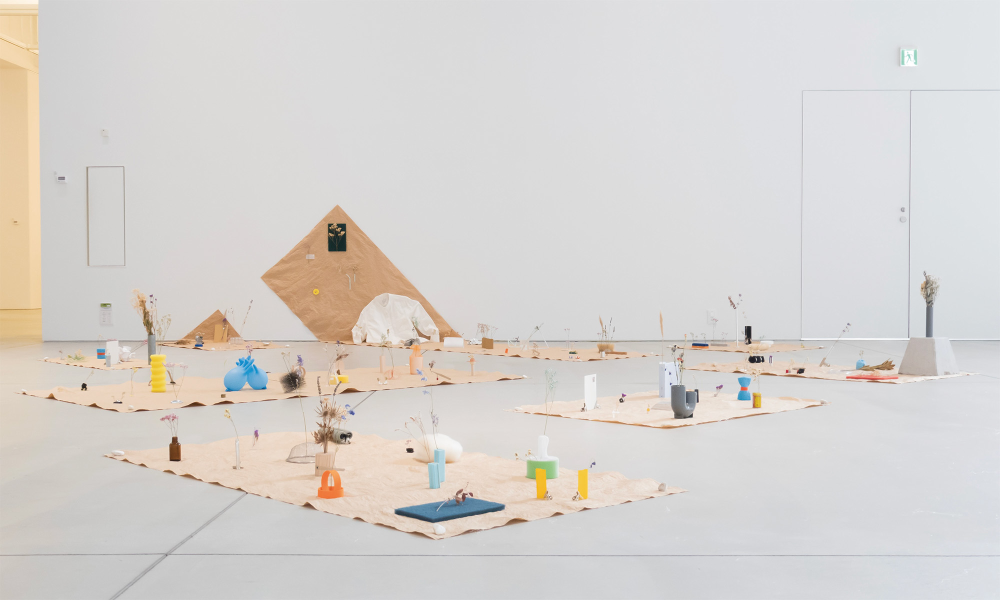
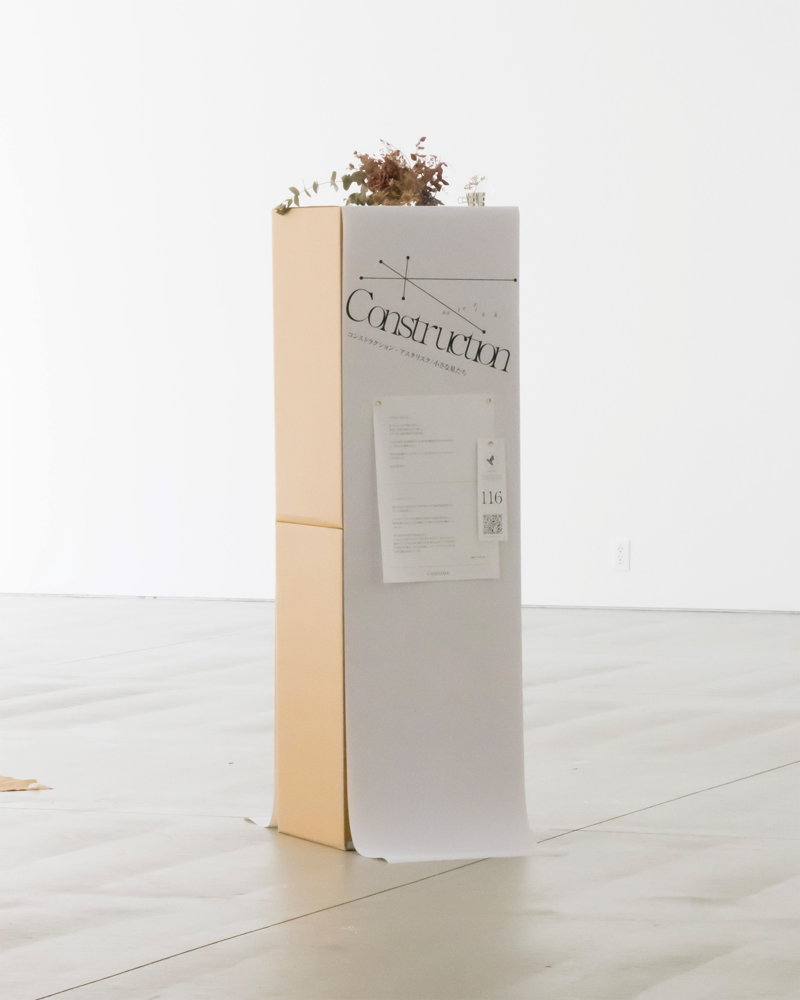
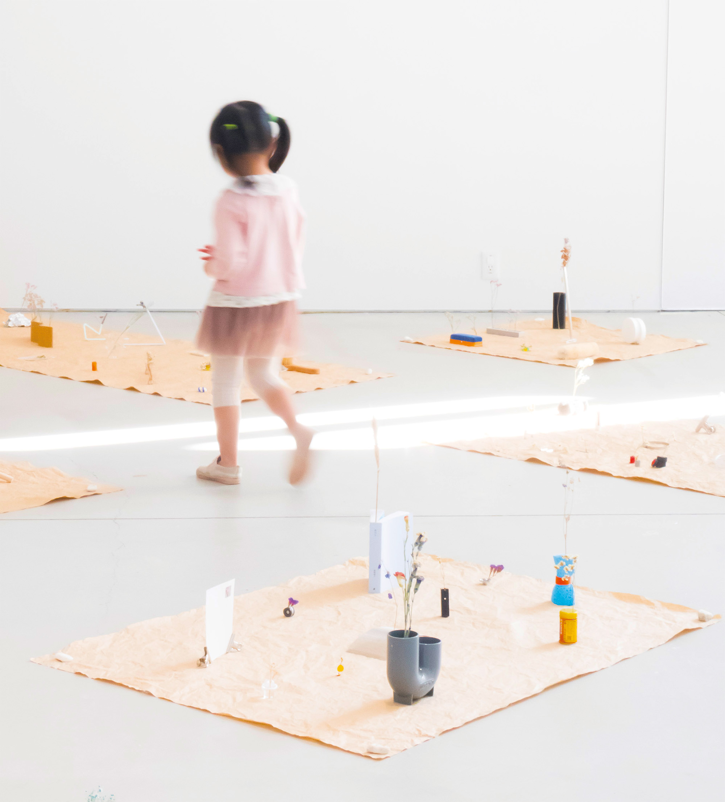
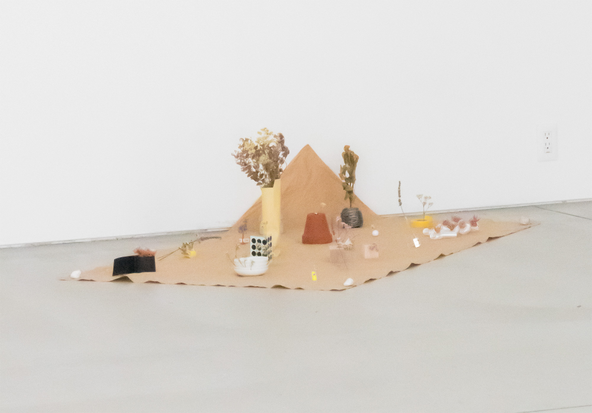
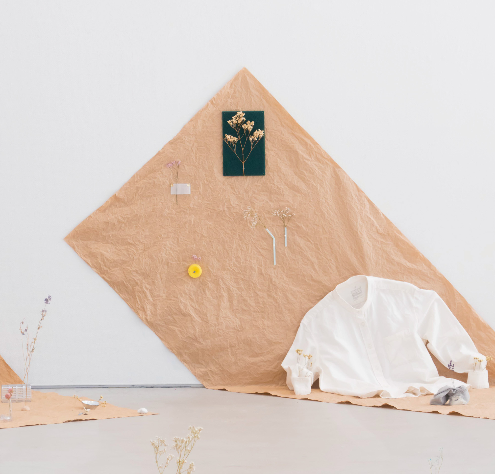
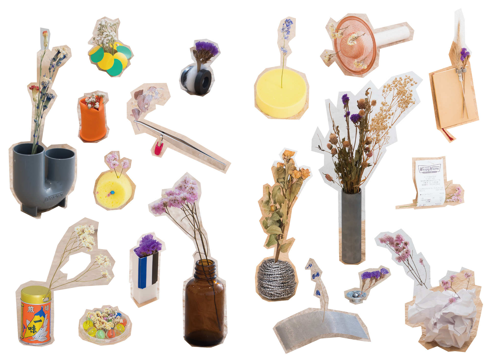
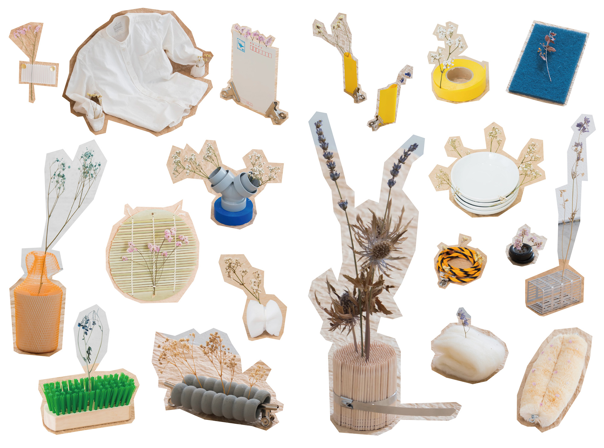

コンストラクション・アスタリスク 「小さな星たち」（2024）
Construction・ asterisk “Little Stars”（2024）
花と何かを組み合わせることで構成を探り、日用品などの身近な物から花器（フラワーベース）を見出す展示。
本展は、多摩美術大学 統合デザイン学科の演習授業「コンストラクション」の延長として、有志によって企画された。秋に開催され、大学の芸術祭にて公開。
「花と何かで構成する」というテーマのもと、9名の参加者により100点を超える作品を制作。
本展の企画、グラフィックデザイン、空間構成、SNS発信までを担当。美術大学の外側にいる人たちにいかに関心を持ってもらえるか、展示体験から何かを持ち帰ってもらえるかを軸に、Construction独自の世界観を構築した。
＊Planning
Edgar Akiyama, Rinka Kobayashi, Masaki Hosoi
＊AD+D
Edgar Akiyama
＊Member
Edgar Akiyama, Rinka Kobayashi,
Yoshino Takayama, An Fusejima,
Masaki Hosoi, Nozomi Terashima,
Haruto Nozawa, Arata Nakagawa,
Satoka Narikawa
＊Instructor
Haruka Aramaki
＊Text Edit & Special Thanks
Atsuya Kameda